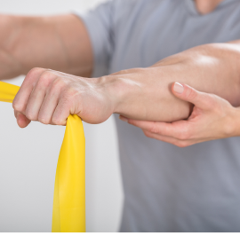
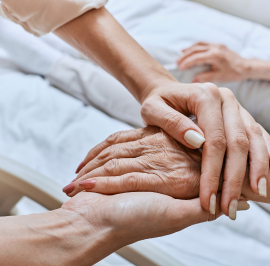
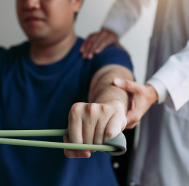

낮병동 운영
치료부터 회복 관리까지
낮병동 입원은 집에서 생활하면서 낮 시간 동안 병원에 내원하여 집중 재활치료를 받는
입원 형태입니다.
입원 치료가 필요하지만 24시간 병동 생활이 부담스러운 환자분들을 위해 회복기 재활
치료의 연속성과 일상 복귀를 동시에 고려한 치료 방식입니다.
낮 병동, 이런 분들께 필요합니다
시술이나 수술 후 안정과 경과 관찰이 필요하지만
장기간 입원이 부담스러운 분들에게
낮병동이 도움이 될 수 있습니다.
-

회복기 환자의 퇴원 후
재활이 아직 필요한 분 -
02 전일 입원은 부담되지만
집중적인 재활치료가 필요한 분 -

보호자 동행이 가능하고
귀가·내원이 가능한 환자 -

일상 복귀를 준비하며
단계적 재활이 필요한 경우
낮병동으로 입원 부담은 가볍게
숙박 없이 하루 일정 안에서 치료와 회복 관리를 받을 수 있어
시간적 부담을 덜고 보다 편리하게 일상 복귀를 준비할 수 있습니다.
- 입원 재활의 전문성 + 가정 생활 병행
- 보호자 부담 완화
- 단계적 일상·사회 복귀